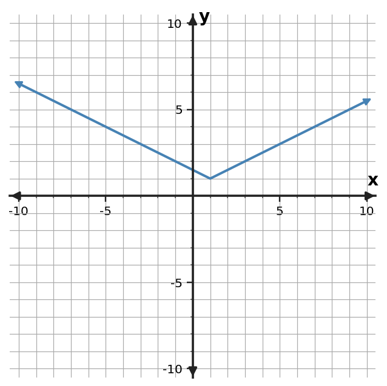

1
For equally spaced inputs, a table has constant first differences of $4$. Which familiar family is supported most strongly?
Four open-response questions for each Unit 6 Mastery Goal.
Mastery Goal: Identify common function families using evidence from graphs, equations, tables, contexts, and key features.
For equally spaced inputs, a table has constant first differences of $4$. Which familiar family is supported most strongly?
For equally spaced inputs, each table output is multiplied by $2$. Which familiar family is supported?
Use the graph shown. Which familiar function family is the best match? Justify with one graph feature.

For equally spaced inputs, a table has constant second differences. Which familiar family is supported, and why is “the graph looks curved” weaker evidence?
Mastery Goal: Represent translations, stretches, compressions, and reflections of parent functions across graphs, equations, tables, and key points.
Describe the translation from $y=x^2$ to $y=(x-4)^2-3$.
Write an equation for $y=x^2$ shifted right 3 and up 2.
The parent point $(2,3)$ is shifted left 2 and up 3. Give the new point.
Explain why $y=(x-5)^2$ shifts the graph right rather than left.
Mastery Goal: Add, subtract, and multiply polynomial expressions using structure, like terms, equivalent forms, and area-based representations.
Simplify $(4x^2+3x-5)+(2x^2-6x+4)$.
Simplify $(7x^2-2x+3)-(3x^2+4x-3)$.
Multiply $(x+7)(x-2)$.
A rectangle has side lengths $x+3$ and $x+6$. Write its area as a polynomial.
Mastery Goal: Connect polynomial and quadratic expression structure to graph features such as vertex, intercepts, symmetry, and direction of opening.
For $f(x)=(x-3)(x+6)$, state the $x$-intercepts and direction of opening.
A student claims $g(x)=(x-2)^2-4$ opens downward. Critique the claim.
Which feature is most visible in $h(x)=2(x-5)^2-2$? State it.
Connect $p(x)=(x+8)(x-7)$ to two graph features.